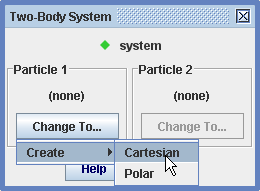
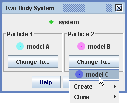

A two-body system track models a system of two dynamic particles that interact with each other via internal radial and tangential forces. The mass of the system is the sum of the particle masses, and the position of the system is the center of mass of the particles.
The internal forces are functions of the distance r between the particles and the angle theta from particle 1 to particle 2. Internal forces act on both particles in the system but in opposite directions (as required by Newton's third law). Internal forces are defined using the Model Builder as shown in Figure 4.
Each of the particles in the system can also experience independent external forces. External forces are also defined using the Model Builder as shown in Figure 5.
A two-body system generates motion data and vectors just like any other point mass. See point mass for additional information.
A system can create a stamped point mass which clones the system's current positions. The stamped point mass positions don't move when you change scale. For more information see Stamping a point mass.
When a two-body system is first created, a dialog is displayed that identifies the particles in the system and provides buttons to change them. The dialog can be recalled at any time by choosing Select Particles... from the system's track menu.

A new system is initially empty. To add a particle to the system, click the button and create a new particle model (you can also choose a previously created particle as shown in Figure 3).



Repeat the above to add a second particle. You can also replace a system particle with another new or existing particle as shown in Figure 3.

The internal forces and other properties of a two-body system are displayed and edited using the Model Builder tool. See building models for detailed information on the Model Builder.
Select the two-body system from the Model Builder drop-down list to display its properties. Note that the masses of the system particles are included in the parameter list, so they are available for use in force expressions. The masses and initial relative positions and velocities are not editable since they are determined by the particles themselves.

The external forces and other properties of the individual particles in a system are also displayed and edited using the Model Builder tool. See building models for detailed information on the Model Builder.
Select a particle of interest from the Model Builder drop-down list to display its properties. Note that all properties, including the mass and initial positions and velocities, are editable.